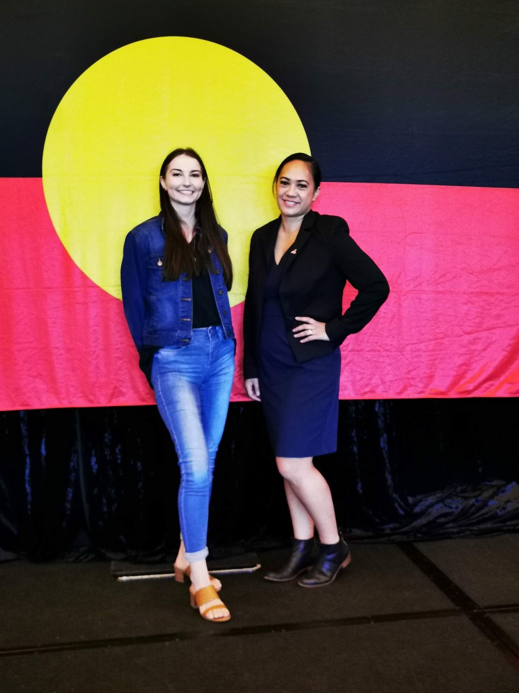
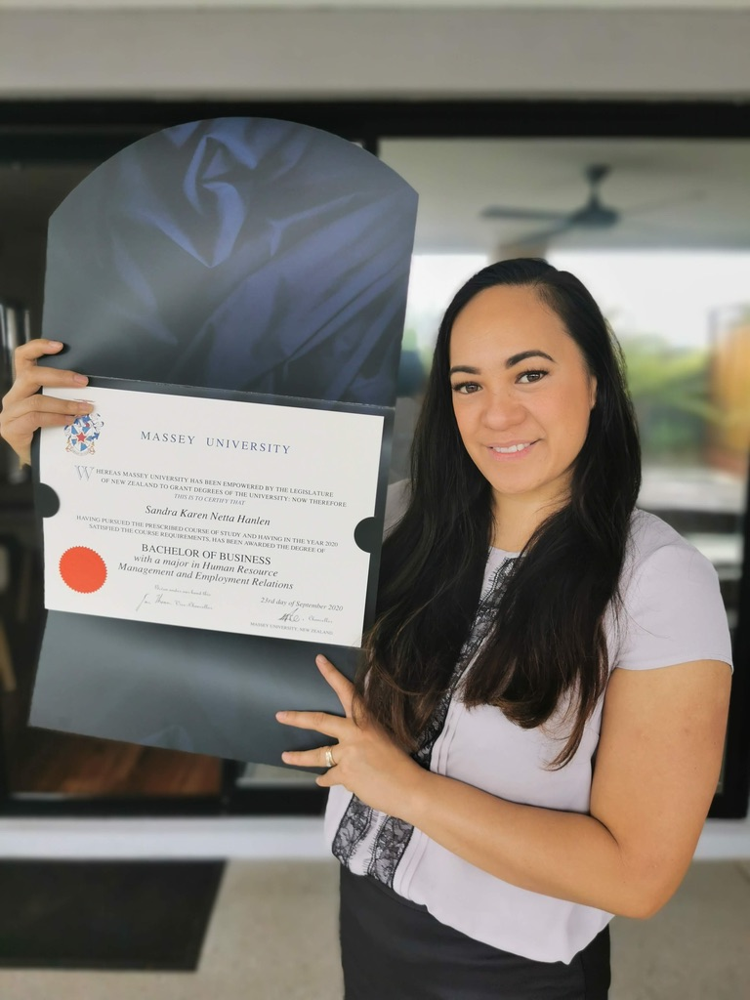
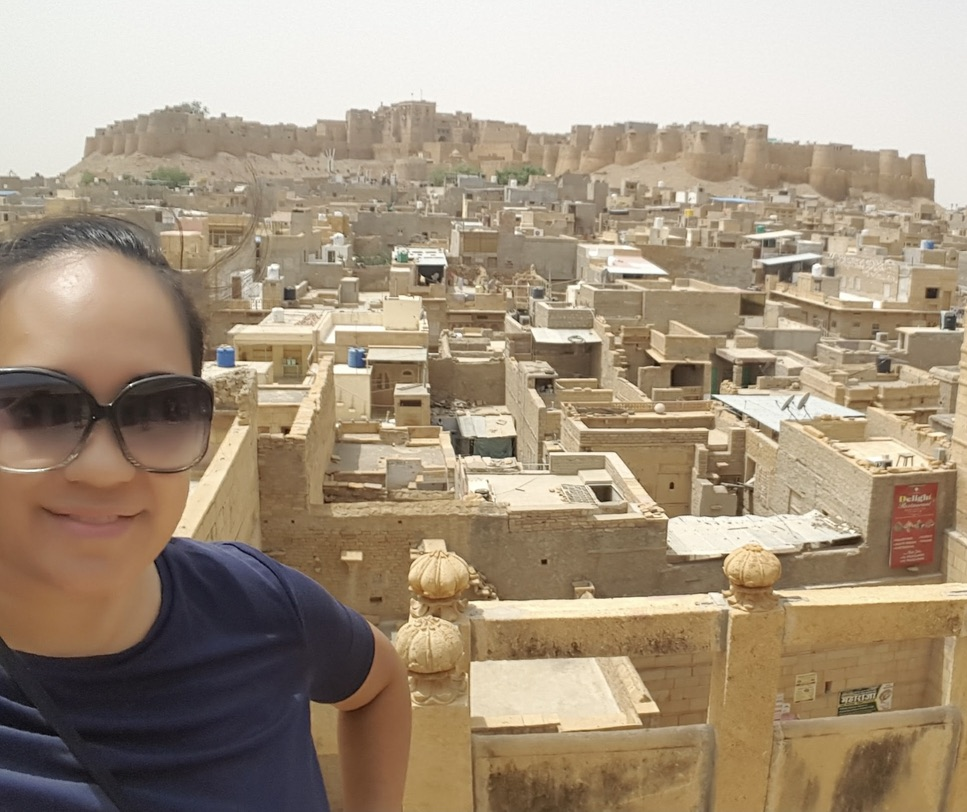
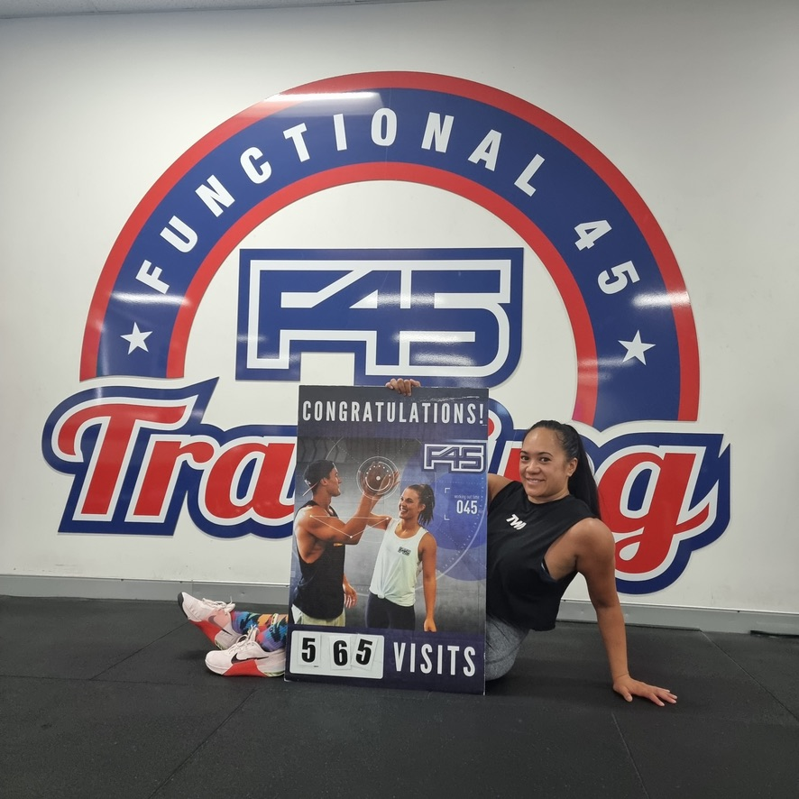

About Me
-

Work
-

Study
-

Travel
-

Interests
Kia Ora! Thank you so much for venturing through my website and reading more about me. I am a proud Maori woman from Aotearoa (New Zealand) who migrated to Whadjuk Boodja in 2012. I have a Bachelor Degree in Business with a major in Human Resources and Employment Relations. I have 10 years of leadership experience with nine of those years in the Employment Services space and prior to this I worked for the Ministry of Social Development in New Zealand for nine years. I am passionate about elevating First Nations people into roles where they are part of the decisions that affect the future generations of their people. I am an advocate and ally for vulerable individuals and believe that higher education is the key to increased representation in executive roles.
Current Professional Experience: State Manager - CareerTrackers Indigenous Internship Program is a social enterprise that seeks to increase Aboriginal and Torres Strait Islander people in to Executive and Board appointments. We have 700 students interning nationally in 2021/2022 and over 1000 alumni to our program.
Glober Trotter: My family and I love to travel and before covid (bc) we took our kids on some epic adventures. Trekking in Nepal, backpacking in Rajastan, total immersion in ancient Egypt were some of our favourite places
If I am not at the gym lifting weights, I could be kayaking, mountain biking or running around Point Peron with friends. Maintaining my mental and physical health has always been a priority. Although not an athlete by any means, living in WA means that there is a plethora or activities to take advantage of.